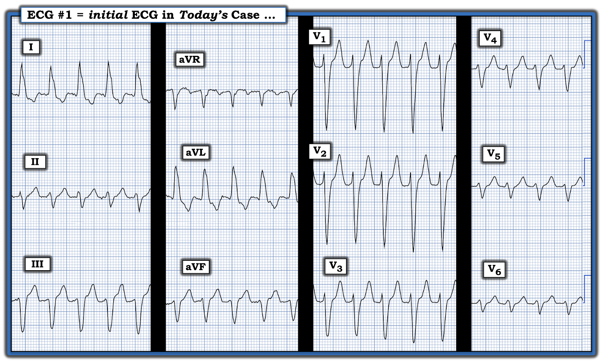
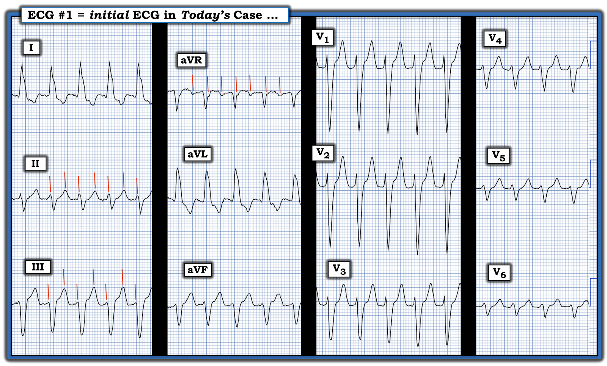
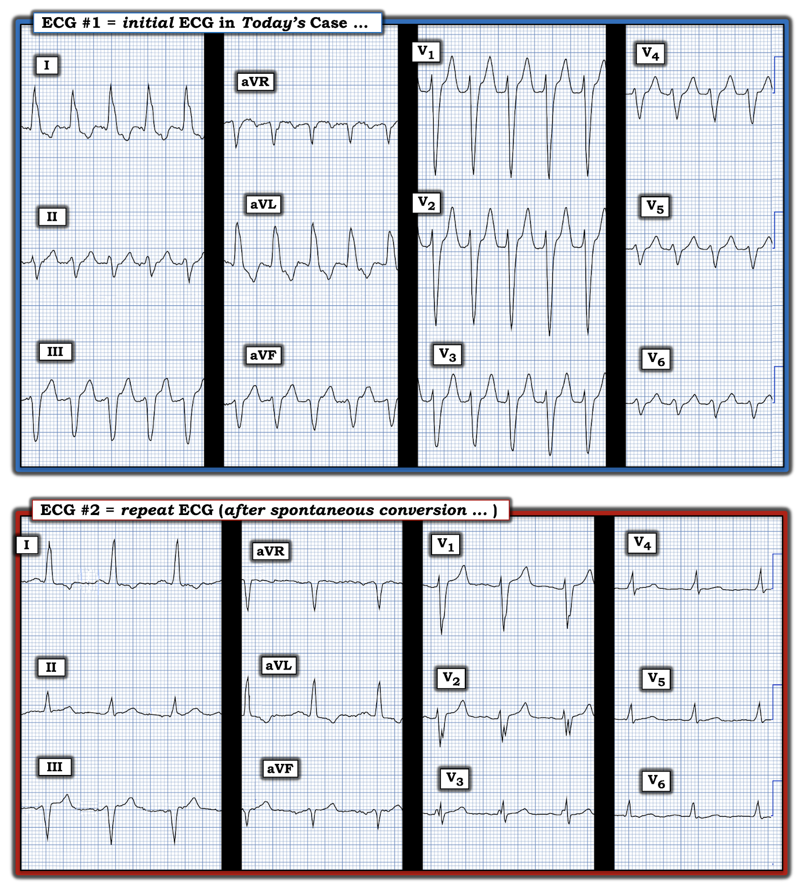
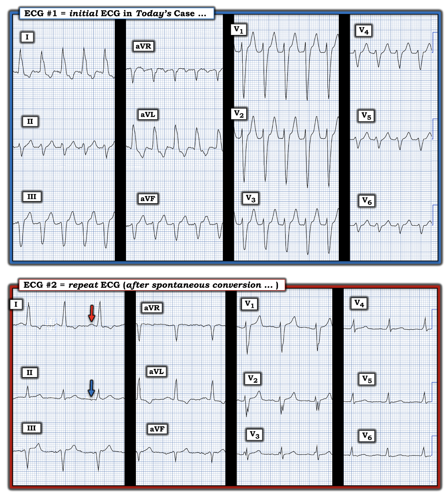
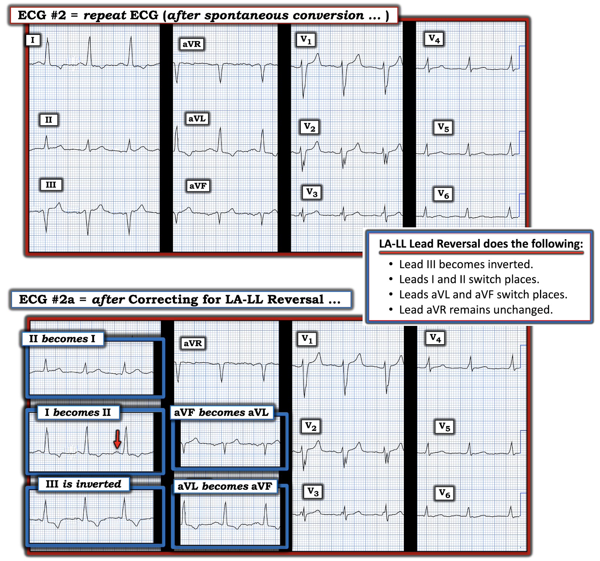
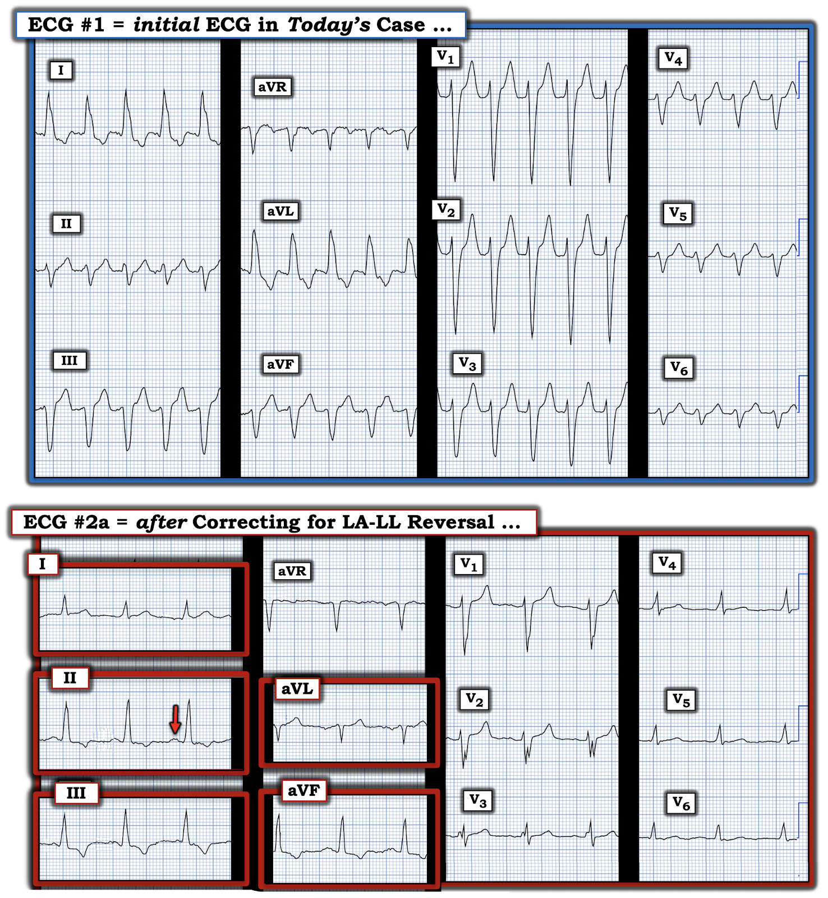

ECG Blog #445 — VT hay LBBB?
Điện tâm đồ ở Hình-1 được ghi từ một phụ nữ 80 tuổi — đến ED (khoa cấp cứu — Emergency Department) — với bệnh sử vài giờ "hồi hộp đánh trống ngực" và CP (đau ngực — Chest Pain). Bệnh nhân ổn định huyết động tại thời điểm ghi điện tâm đồ #1 .
CÂU HỎI:
Điện tâm đồ ở Hình-1 đã được một số bác sĩ xem — phần lớn trong số họ cho rằng nhịp này là một dạng nào đó của SVT (nhịp nhanh trên thất — SupraVentricular Tachycardia) kèm dẫn truyền lệch hướng dạng LBBB (blốc nhánh trái — Left Bundle Branch Block).
- BẠN có đồng ý với cách diễn giải của phần lớn các bác sĩ, những người cho rằng nhịp ở điện tâm đồ #1 là SVT kèm dẫn truyền lệch hướng dạng LBBB không?
- Bạn chắc chắn đến mức nào về câu trả lời của mình?
- Bạn sẽ điều trị bệnh nhân này như thế nào?


SUY NGHĨ CỦA TÔI về CA BỆNH hôm nay:
Điện tâm đồ ở Hình-1 — cho thấy một nhịp WCT đều (nhịp nhanh QRS rộng — Wide-Complex Tachycardia) với tần số ngay dưới 150/phút, không có dấu hiệu rõ ràng của sóng P xoang.
- Mặc dù hình dạng QRS — có phù hợp với dẫn truyền kiểu LBBB ở các chuyển đạo chi của Hình-1 (tức là sóng R đơn pha, dương hoàn toàn ở các chuyển đạo bên I và aVL) — hình dạng QRS lại không như mong đợi ở các chuyển đạo trước ngực, vì chúng ta không hề thấy sóng R chiếm ưu thế ở chuyển đạo bên V6. Thay vào đó — hình dạng rS tương tự được thấy ở cả 6 chuyển đạo trước ngực, trong đó sóng dương khởi đầu (sóng r) đã rộng một cách đáng ngạc nhiên ngay từ chuyển đạo V4.
- LƯU Ý: Sóng S sâu ở các chuyển đạo V1,V2 trong điện tâm đồ #1 gợi ý khả năng có LVH nền. Một lý do khiến dẫn truyền kiểu LBBB ở bệnh nhân có LVH rõ có thể không tiến triển thành sóng R chiếm ưu thế (nếu không muốn nói là dương hoàn toàn) ở chuyển đạo V6 — là các lực hướng trái và ra sau của LVH rõ kèm LBBB có thể làm chậm vùng chuyển tiếp sang dương ưu thế ở các chuyển đạo trước ngực cho đến các chuyển đạo trước ngực hướng ra sau nhiều hơn, như V7 hoặc V8.
NHẬN ĐỊNH CỦA TÔI
về điện tâm đồ #1:
Như thường được nhấn mạnh trong ECG Blog này (Xem PHẦN BỔ SUNG của hôm nay ở bên dưới) — xác suất thống kê để một nhịp WCT đều không có dấu hiệu rõ ràng của sóng P xoang hóa ra là VT khởi điểm đã là 80%.
- Tuổi cao của bệnh nhân hôm nay và hình dạng QRS có phần không điển hình cho dẫn truyền kiểu LBBB — đẩy xác suất thống kê này lên tới ~90%.
- Dù 90% không bằng 100% — thông điệp về điện tâm đồ ở Hình-1 là rõ ràng: Hãy coi là VT cho đến khi chứng minh được điều ngược lại! Điều trị bệnh nhân theo hướng đó.
- ĐIỂM THEN CHỐT (PEARL) #1: Nói cách khác — Thay vì phải chứng minh điện tâm đồ #1 là VT — Chúng ta cần chứng minh rằng nhịp này không phải VT. Cho đến khi làm được điều đó — Hãy coi là VT cho đến khi chứng minh được điều ngược lại (và điều trị bệnh nhân theo hướng đó).
Các điểm bổ sung về điện tâm đồ #1:
Có thực sự không có dấu hiệu hoạt động nhĩ nào trong bản ghi ban đầu này không?
- Mặc dù có những gợn sóng biên độ nhỏ ở đường nền trong bản ghi ban đầu hôm nay — các gợn sóng này hiện diện ở cả 6 chuyển đạo chi, trong khi hoạt động nhĩ "thực sự" nói chung sẽ nổi bật hơn ở một số chuyển đạo so với các chuyển đạo khác (và hoạt động nhĩ thực sự không nên kéo dài suốt toàn bộ đường nền — như chúng ta thấy ở các chuyển đạo I, aVR và aVL).
- Các gợn sóng mà chúng ta thấy ở các chuyển đạo chi của Hình-1 — không đồng nhất về hình dạng, như tôi kỳ vọng nếu chúng thực sự đại diện cho hoạt động nhĩ.
- Cuối cùng — mặc dù tần số gần 150/phút ở điện tâm đồ #1 nên gợi ý khả năng cuồng nhĩ (AFlutter) nền với dẫn truyền AV 2:1 — hoạt động nhĩ 2:1 lại không khớp! (Xem Hình-2):


ĐIỂM THEN CHỐT (PEARL) #2: Cách tôi tìm sóng cuồng nhĩ là cẩn thận đặt compa đo (calipers) của mình ở chính xác MỘT NỬA khoảng R-R của cơn nhịp nhanh (vì NẾU nhịp là cuồng nhĩ — thì tần số nhĩ phải gấp đôi tần số thất nếu có dẫn truyền AV 2:1).
- Các chuyển đạo "ƯU TIÊN" ("GO TO") mà tôi ưa dùng để nhận diện hoạt động nhĩ kém rõ ràng là chuyển đạo II, III, aVF; aVR; và V1. NẾU không chuyển đạo nào trong 5 chuyển đạo này gợi ý hoạt động nhĩ — thì tôi sẽ khảo sát 7 chuyển đạo còn lại. Dù vậy, cuồng nhĩ gần như luôn để lộ sẵn bằng chứng hoạt động nhĩ ở một hoặc nhiều chuyển đạo “Go To” của tôi.
- Ở Hình-2 — tôi đã đặt các vạch ĐỎ phía trên những điểm ở chuyển đạo II, III và aVR mà tôi nghĩ có thể chỉ điểm hoạt động nhĩ nền. Nhưng hãy để ý rằng khoảng cách giữa các vạch ĐỎ này không hằng định, như lẽ ra phải thế NẾU có cuồng nhĩ nền với khoảng P-P đều một cách chính xác. Vì vậy — nhịp ở điện tâm đồ #1 không phải cuồng nhĩ! (Xem ECG Blog #287 — nếu muốn tìm hiểu thêm về nhận diện cuồng nhĩ trên điện tâm đồ).
Bạn sẽ điều trị bệnh nhân này như thế nào?
Như thường được nhấn mạnh trong ECG Blog này — "Đôi khi bạn phải có mặt tại chỗ mới biết được!" Dù vậy — tôi xin đưa ra những suy nghĩ sau:
- Nhịp ở điện tâm đồ #1 là một nhịp WCT đều với tần số ~150/phút, không có dấu hiệu rõ ràng của sóng P xoang. Như đã nêu ở trên, với tuổi cao của bệnh nhân này và hình dạng QRS có phần không điển hình cho dẫn truyền kiểu LBBB — tôi ước tính xác suất thống kê nhịp này là VT vào khoảng ~90%. Vì vậy — Hãy coi là VT, và điều trị theo hướng đó!
- Chúng ta được biết bệnh nhân này "ổn định huyết động" — nhưng, vì người phụ nữ lớn tuổi này đang than đau ngực — tôi sẽ không muốn để bệnh nhân ở trong nhịp này (nhiều khả năng là VT) trong một thời gian dài trước khi chuyển sang sốc điện chuyển nhịp đồng bộ.
- Tôi sẽ không thử Adenosine — vì nhịp này nhiều khả năng nhất là VT do thiếu máu cục bộ, và: i) Mặc dù Adenosine có thể chuyển nhịp một số dạng VT vô căn (tức là khi bệnh nhân là người trưởng thành trẻ tuổi không có bệnh tim nền) — Adenosine khó có khả năng chuyển nhịp VT do thiếu máu cục bộ; và, ii) Adenosine không hoàn toàn vô hại (Để biết thêm về ưu và nhược điểm của Adenosine — Xem PHẦN BỔ SUNG trong ECG Blog #393).
- Tùy vào mức độ tự tin của bạn trong trường hợp cụ thể này (tức là "Đôi khi bạn phải có mặt tại chỗ mới biết được!" ) — có thể thử Amiodarone tĩnh mạch, với người điều trị luôn sẵn sàng sốc điện chuyển nhịp ngay khi có dấu hiệu mất bù đầu tiên (1st).
===========================
CA BỆNH TIẾP DIỄN:
Bệnh nhân tự chuyển nhịp thành điện tâm đồ ghi lại được trình bày bên dưới ở Hình-3. Sự tự chuyển nhịp này xảy ra trước khi dùng bất kỳ thuốc chống loạn nhịp nào.
- Bệnh nhân được đưa vào quy trình "Loại trừ nhồi máu cơ tim" ("Rule-Out MI") — nhưng cơn CP mà bà đang bị đã biến mất gần như ngay lập tức sau khi bà tự chuyển sang nhịp được thể hiện ở điện tâm đồ #2.
- Amiodarone tĩnh mạch được bắt đầu với hy vọng ngăn tái phát cơn WCT mà bệnh nhân đã gặp khi nhập viện.
CÂU HỎI:
- BẠN sẽ diễn giải điện tâm đồ ghi lại ở Hình-3 như thế nào?
- Nhịp ở điện tâm đồ #2 giờ đã là nhịp xoang chưa?
- Điện tâm đồ ở Hình-3 có làm thay đổi ý kiến của bạn theo bất kỳ cách nào về nhịp ban đầu ở Hình-1 là gì không?
- Bệnh nhân có đang bị nhồi máu cơ tim cấp không?


TRẢ LỜI:
Nhìn vào điện tâm đồ #2 — tần số nhịp đã chậm lại và phức bộ QRS đã hẹp lại so với ở điện tâm đồ #1. Dù vậy — BẠN có để ý rằng không có sóng P dương nào ở chuyển đạo II của điện tâm đồ #2 không? (Mũi tên XANH ở chuyển đạo II của Hình-4).
- ĐIỂM THEN CHỐT (PEARL) #3: Việc thiếu sóng P dương rõ ràng ở chuyển đạo II trong khi có sóng P dương ở các chuyển đạo I và aVL (Mũi tên ĐỎ ở Hình-4) — thường gặp nhất là do 1 trong 2 nguyên nhân: i) Nhịp nhĩ thấp; — hoặc, ii) Một "sự cố kỹ thuật".
- Loại đảo điện cực thường gặp nhất là nhầm lẫn giữa điện cực LA (tay trái — Left Arm) và RA (tay phải — Right Arm). Điều này không xảy ra ở điện tâm đồ #2 vì sóng P và phức bộ QRS đều dương ở chuyển đạo I, và QRS âm ở chuyển đạo aVR (Xem ECG Blog #264 — để biết thêm về đảo điện cực LA-RA).
- Theo kinh nghiệm của tôi, loại đảo điện cực thường gặp thứ 2 là nhầm lẫn giữa điện cực LA-LL (tay trái - chân trái — Left Arm - Left Leg) (Xem ECG Blog #375 — để biết thêm về đảo điện cực LA-LL).
- "Tin tốt" — là bất kể điện tâm đồ #2 là nhịp nhĩ thấp — hay là nhịp xoang nhưng có đảo điện cực LA-LL — thì bệnh nhân không còn ở trong nhịp WCT nữa. Thay vào đó — bệnh nhân đã tự chuyển sang một nhịp trên thất với tần số tim được kiểm soát tốt hơn nhiều (và không có gợi ý thay đổi ST-T cấp trên điện tâm đồ ghi lại này).


NẾU có đảo điện cực LA-LL — Điện tâm đồ #2 sẽ trông như thế nào?
Vị trí điện cực không được kiểm tra sau khi ghi bản ghi sau chuyển nhịp — và tôi không được cung cấp thêm bản ghi nào của ca này. Do đó — Chúng ta sẽ không bao giờ biết được bản ghi sau chuyển nhịp là nhịp nhĩ thấp hay nhịp xoang có đảo điện cực LA-LL.
- Như đã bàn luận và minh họa trong ECG Blog #375 — đảo điện cực LA-LL sẽ gây ra những thay đổi trên điện tâm đồ được trình bày ở Hình-5.


Hiệu chỉnh cho đảo điện cực LA-LL:
Chúng ta có thể hiệu chỉnh những thay đổi dự đoán được của đảo điện cực LA-LL. Làm như vậy cho phép chúng ta dự đoán điện tâm đồ sau chuyển nhịp lẽ ra sẽ trông như thế nào nếu lý do không có sóng P dương ở chuyển đạo II của điện tâm đồ #2 là đảo điện cực LA-LL.
- Tôi trình bày ở điện tâm đồ #2a (Bản ghi phía dưới trong Hình-5) — điện tâm đồ sau chuyển nhịp lẽ ra sẽ trông như thế nào nếu lý do không có sóng P dương ở chuyển đạo II là đảo điện cực LA-LL.
- Lưu ý ở điện tâm đồ #2a — giờ đây đã thấy sóng P xoang dương ở chuyển đạo II (đúng như mong đợi nếu nhịp sau chuyển nhịp là nhịp xoang).
Vậy — Giả sử có đảo điện cực LA-LL ở điện tâm đồ #2 — mà giờ chúng ta đã "hiệu chỉnh" ở điện tâm đồ #2a — tôi trình bày ở Hình-6 sự so sánh giữa bản ghi ban đầu hôm nay ( = điện tâm đồ #1, trong đó có nhịp WCT đều) sẽ trông như thế nào — so với bản ghi sau chuyển nhịp đã hiệu chỉnh cho tình trạng đảo điện cực LA-LL giả định.


ĐIỂM THEN CHỐT (PEARL) #4: Lý do tôi nhấn mạnh khả năng đảo điện cực LA-LL ở bản ghi sau chuyển nhịp của ca hôm nay — là chúng ta thường sẽ không chắc chắn về nguyên nhân của một nhịp WCT đều vào thời điểm cần bắt đầu điều trị.
- Trong những trường hợp như vậy — có thể chỉ sau khi trở về nhịp xoang, bằng cách so sánh WCT với bản ghi sau chuyển nhịp, chúng ta mới có thể xác định hồi cứu liệu WCT có phải là VT hay không (Xem ECG Blog #422 và ECG Blog #263).
- Trong ca hôm nay — bản ghi sau chuyển nhịp đã hiệu chỉnh ( = điện tâm đồ #2a) cho thấy nhịp xoang và không có blốc nhánh có sẵn từ trước. Mặc dù điều này không loại trừ khả năng dẫn truyền lệch hướng liên quan tần số — hình dạng QRS bất thường mà tôi đã mô tả ở trên vẫn gợi ý (theo ý kiến của tôi) — xác suất ~90% rằng nhịp WCT đều ở điện tâm đồ #1 là VT.
KẾT LUẬN CA BỆNH:
Với tần số nhanh của nhịp WCT đều trong ca hôm nay ở người phụ nữ lớn tuổi có triệu chứng này — đánh giá bổ sung để hỗ trợ xử trí tối ưu là có chỉ định.
- Siêu âm tim đã được thực hiện — và không có gì đáng chú ý (chức năng thất trái bình thường).
- Troponin — âm tính với nhồi máu cấp.
- Thông tim — không thấy bệnh mạch vành đáng kể.
- Bệnh nhân được đề nghị thăm dò điện sinh lý (EP — ElectroPhysiologic) — nhưng bà từ chối, vì bà "cảm thấy khỏe". Bà được xuất viện với Amiodarone.
==========================================
Lời cảm ơn: Xin cảm ơn Jean Max Figueiredo (từ Nova Iguaçu, Brazil) đã cung cấp ca bệnh và bản ghi này.
==========================================
==============================
PHẦN BỔ SUNG (29/8/2024):
- Tôi xin trích lại bên dưới từ ECG Blog #196 — một số hình hữu ích và Pearl Audio của tôi về đánh giá nhịp WCT đều.


ECG Media PEARL #13a (Audio 12:20 phút) — trình bày “Quan điểm của tôi” về đánh giá WCT đều (nhịp nhanh QRS rộng — Wide-Complex Tachycardia), khi không có sóng P xoang — kèm các mẹo để phân biệt giữa VT với SVT kèm BBB có sẵn từ trước hoặc dẫn truyền lệch hướng.
==============================
Các bài ECG Blog Liên quan Bổ sung đến Ca hôm nay:
- ECG Blog #185 — Trình bày Hệ thống đọc nhịp của tôi, sử dụng Cách tiếp cận Ps, Qs & 3R.
- ECG Blog #210 — Trình bày phương pháp Cách-Một-Nhát (hoặc Cứ-Mỗi-Ba-Nhát) để ước tính tần số tim nhanh — và bàn luận một ca khác có nhịp WCT đều.
- ECG Blog #220 — Ôn lại cách tiếp cận WCT ( = nhịp nhanh QRS rộng — Wide-Complex Tachycardia) đều.
- e WCT (nhịp nhanh QRS rộng — Wide-Complex Tachycardia) đều.
- ECG Blog #196 — Trình bày một Ca khác có nhịp WCT đều.
- ECG Blog #263 và Blog #283 — Blog #361 — và Blog #384 — Thêm các nhịp WCT ...
- ECG Blog #197 — Trình bày khái niệm VT vô căn, trong đó VT phân nhánh là một trong 2 thể thường gặp nhất.
- ECG Blog #346 — Trình bày một ca VT đường ra thất trái (LVOT VT) (một thể VT vô căn ít gặp hơn).
- ECG Blog #204 — Trình bày chẩn đoán điện tâm đồ các blốc nhánh (RBBB/LBBB/IVCD).
- ECG Blog #203 — Trình bày chẩn đoán điện tâm đồ về Trục và các blốc phân nhánh. Để ôn lại hình dạng QRS trong các blốc hai phân nhánh (RBBB/LAHB; RBBB/LPHB) — Xem Video Pearl trong bài blog này.
- ECG Blog #211 — TẠI SAO dẫn truyền lệch hướng lại xảy ra?
- ECG Blog #301 — Trình bày một WCT có nguồn gốc trên thất! (với RẤT NHIỀU nội dung về dẫn truyền lệch hướng).
- ECG Blog #323 — Ôn lại VT phân nhánh.
- ECG Blog #38 và Blog #85 — Ôn lại VT phân nhánh.
- ECG Blog #278 — Một ca khác có nhịp WCT đều ở người trưởng thành trẻ tuổi.
- ECG Blog #35 — Ôn lại VT đường ra thất phải (RVOT).
- ECG Blog #42 — Tiêu chuẩn phân biệt VT với dẫn truyền lệch hướng.
- ECG Blog #133 và ECG Blog #151— các ví dụ trong đó phân ly nhĩ thất đã xác nhận chẩn đoán VT.
- Phân tích từng bước một ca nhịp WCT đều ở người phụ nữ 80 mấy tuổi này — Xem Bình luận của tôi trong bài đăng ngày 5 tháng 5 năm 2020 trên Dr. Smith’s ECG Blog.
- Một ca khác có nhịp WCT đều ở một phụ nữ 60 mấy tuổi — Xem Bình luận của tôi ở cuối trang trong bài đăng ngày 15 tháng 4 năm 2020 trên Dr. Smith’s ECG Blog.
- Ôn lại các VT vô căn (tức là VT phân nhánh; RVOT VT và LVOT VT) — Xem Bình luận của tôi ở cuối trang trong bài đăng ngày 7 tháng 9 năm 2020 trên Dr. Smith’s ECG Blog.
- Ôn lại một loại VT khác (VT đa hình thái — Pleomorphic VT) — Xem Bình luận của tôi trong bài đăng ngày 1 tháng 6 năm 2020 trên Dr. Smith’s ECG Blog.